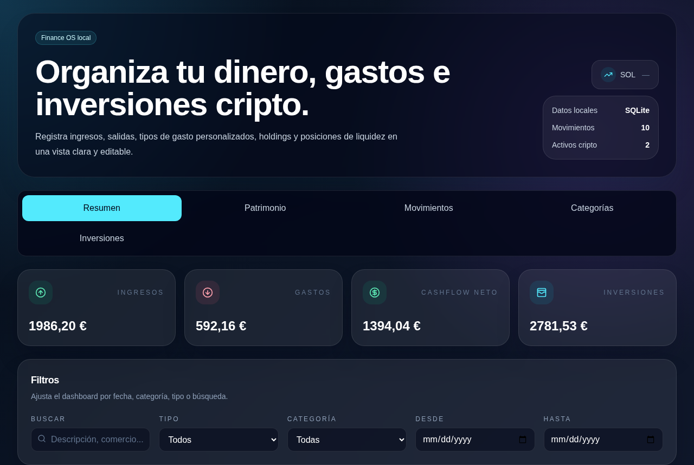

AI Automation Engineer & Data Analyst en Lisboa. Diseño agentes de IA, pipelines RAG y flujos de trabajo automatizados que resuelven problemas reales de negocio.
Soy Ray Peratta, ingeniero especializado en sistemas impulsados por Large Language Models, agentes de IA y automatización de flujos de trabajo. Desarrollo soluciones de extremo a extremo: asistentes de IA, sistemas RAG, workflows multi-agente e integraciones de APIs.
Mi base es el análisis de datos — más de 2 años en consultora y operaciones multinacionales (Accenture, Conectys) creando dashboards, automatizando reporting y encontrando insights en KPIs operativos. Esa experiencia me dio una obsesión: eliminar el trabajo manual repetitivo.
Hoy aplico IA generativa para construir sistemas escalables, confiables y listos para producción. Si un proceso se repite, probablemente puedo automatizarlo.
Proyectos reales, en producción o camino a ella. Cada uno nace de un problema personal que ninguna herramienta existente resolvía bien.
Agente de IA autoalojado integrado con Telegram, Obsidian y APIs externas. Gestiona memoria persistente, ejecuta tareas programadas (cron/heartbeats), automatiza flujos diarios y actúa como segunda memoria operativa.

App full-stack para tracking de gastos, ingresos, holdings cripto y pools de liquidez. Registro de movimientos vía Telegram (shorthand → API), precios en tiempo real desde Binance/Bybit, gráficos de PnL y distribución por categoría.
App Android nativa de nutrición con backend serverless. Escaneo y registro de alimentos, seguimiento de hábitos y sync en la nube. En camino a Google Play con beta cerrada de 12+ testers.
Pipelines de datos y reporting automatizado para operaciones multinacionales: dashboards de KPIs en Power BI, ETL con Python/SQL y flujos con n8n/Make que eliminaron horas de trabajo manual semanal.
Abierto a roles de AI Automation Engineer, AI Engineer o LLM Engineer — y a proyectos freelance de automatización e IA aplicada.